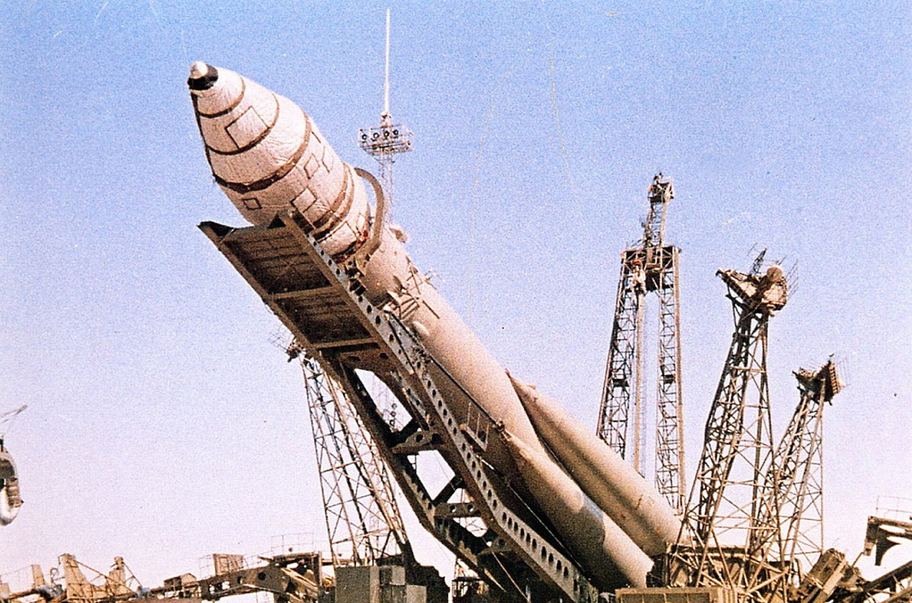
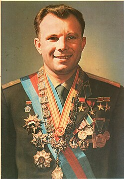

Misja kosmiczna Wostok 1
Wostok 1 – pierwszy lot kosmiczny człowieka w kosmos w ramach programu Wostok. Pierwsza załogowa misja  statku kosmicznego typu Wostok. Misja miała miejsce 12 kwietnia 1961 roku. O godzinie 6:07 UTC (9:07 czasu moskiewskiego) tego dnia, Jurij Gagarin wystartował z kosmodromu Bajkonur w Kazachstanie w pierwszym locie człowieka w przestrzeni kosmicznej. Przebywał w niej 108 minut. Lot Wostoka 1 był kierowany całkowicie z Ziemi, ponieważ nie wiedziano jak organizm kosmonauty zachowa się w przestrzeni kosmicznej. Przyrządy kontrolne były zablokowane, a kod odblokowujący umieszczono w zalakowanej kopercie. Z pokładu usunięto instalację samolikwidacji i urządzenia rozpoznawcze. Inżynierowie opracowali szyfrowy przełącznik, który pozwalał na odłączenie systemów nawigacyjnych i przejęcie kontroli przez kosmonautę, gdyby ręczne sterowanie okazało się niezbędne. Klawiatura o sześciu przyciskach została umieszczona z lewej strony panelu z przyrządami pokładowymi. Kopertę z kodem pozwalającym Gagarinowi przejąć kontrolę nad Wostokiem umieszczono na pokładzie pojazdu. S. Korolow był przeciwny takiemu rozwiązaniu, lecz oficjalnie je zaakceptował, by nie wchodzić w konflikt z lekarzami. Jednak przed lotem cztery osoby podały kod Gagarinowi, w tym Korolow i Kamanin. Te trzy liczby to trzy, dwa, pięć.
Historia
 Przygotowania do lotu przebiegały w ogromnym pośpiechu i pod silną presją. Stany Zjednoczone mogły w każdej chwili dokonać podobnego wyczynu. W marcu 1960 sformowano oddział kandydatów na kosmonautów. Znalazło się w nim dwunastu młodych oficerów, pilotów samolotów odrzutowych. W kwietniu 1960 zwiększono oddział do dwudziestu osób. Z tej grupy do pierwszego lotu wytypowano sześciu kandydatów. Do pierwotnego terminu lotu pozostało zaledwie 400 dni. W związku z tym kandydaci rozpoczęli wszechstronny, intensywny i bardzo wyczerpujący trening. Gdy Gagarin i jego koledzy zostali włączeni do zespołu, urządzenia treningowe w Gwiezdnym Miasteczku nie były jeszcze gotowe. Kandydaci na kosmonautów brali udział w zajęciach teoretycznych i ćwiczeniach fizycznych po różnych moskiewskich instytutach medycznych i naukowych, głównie w Akademii Nauk Lotniczych im. Żukowskiego. Również pełne ręce roboty mieli przede wszystkim konstruktorzy i inżynierowie Wostoka i rakiety nośnej. W miarę udane testy, 9 (Korabl-Sputnik 4) i 25 (Korabl-Sputnik 5) marca 1961 roku pozwoliły podjąć decyzję o starcie statku z kosmonautą na pokładzie. Państwowa Komisja wyznaczyła termin na 11-12 kwietnia 1961 i wybrała pierwszego pilota. O tych decyzjach kosmonautów powiadomiono dopiero 10 kwietnia 1961 roku. O wyborze Gagarina przesądziło jego pochodzenie społeczne – to, że jego ojciec był niewykwalifikowanym robotnikiem, matka pracownicą kołchozu. Nazwa Wostok była tajna, gdyż oznaczała zarówno satelitę szpiegowskiego – później nazwanego Zenit – jak i załogowy statek kosmiczny, dlatego niektórzy byli przeciwni ujawnieniu nazwy statku Gagarina. Rozważano ponowne użycie nazwy Sputnik. Zwyciężył pogląd Tichonrawowa, który nalegał, że tak doniosły lot nie może być kolejnym Sputnikiem. Jeszcze przed startem kosmonauty przygotowano trzy wersje komunikatów prasowych. W trzech zapieczętowanych kopertach przesłano je do oficjalnej agencji prasowej TASS w Moskwie. Dokumenty przygotował Jurij Mazżorin, który pełnił podwójną funkcję specjalisty w zakresie układów sterowania i oficera politycznego. Koperta numer jeden miała być użyta w przypadku pełnego sukcesu. W przypadku przymusowego lądowania na obcym terytorium numer dwa. Trzecia koperta – w przypadku katastrofy. Po wejściu Wostoka na orbitę i zebraniu danych o wysokości, nachyleniu i czasie obiegu Kreml polecił agencji TASS otwarcie koperty numer jeden[2]. W materiałach przygotowanych dla TASS nawet drobne szczegóły stanowiły problem. Naturalną rzeczą wydawało się, że pierwszy lotu powinien wykonać statek kosmiczny o nazwie Wostok 1, gdyż w kosmos mieli polecieć następni kosmonauci. Gdyby statkowi nadano numer, sugerowałoby to jednak początek całej serii. Nie chciano, by ktoś wiedział, że przygotowywane są następne loty, dlatego Wostok nie miał żadnego numeru.
Szczegółowy przebieg misji
- 06:07 – wystrzelenie, łączność ze stacją w Zarja-1 w Bajkonurze
- Podczas startu Kiedr (kryptonim Wostoka 1 i Gagarina) rozmawiał z S. Korolowem i do 06:15. Z zarejestrowanych i opublikowanych zapisów rozmów znane są poniższe słowa Gagarina:
-
- Zrozumiałem. Słyszałem w... (niezrozumiałe) ...zadziałało bardzo dobrze. Mój stan ogólny jest wyśmienity. Słyszę cię głośno i wyraźnie.
- 06:13: ...lot przebiega w porządku. Widzę Ziemię. Widoczność jest dobra. ...widzę niemal wszystko. Pod pokrywą jest pewna przestrzeń. Kontynuuję lot, wszystko dobrze.
-
- 06:14: Wszystko działa dobrze. Wszystkie urządzenia sprawne. Byle tak dalej!
- 06:15: Zarja-1, Zarja-1, nie słyszę cię za wyraźnie. Czuję się dobrze. Mam dobry nastrój. Kontynuuję lot...
- 06:17 – wejście na orbitę, lot nad stacją Zarja-2 w Kołpaszewie
- Zarja-2 wzywa Kiedra. Gagarin składa rutynowy meldunek: Statek pracuje normalnie. W wizjerze widzę Ziemię. Wszystko przebiega według planu.
- O 6:21 powtarza meldunek i zaraz po tym kontakt ze stacją Zarja-2 urywa się. Następuje trzyminutowa przerwa w łączności na falach UKF
- Zaraz po urwaniu się kontaktu ze stacją Zarja-2 stacja Wesna w Chabarowsku odbiera na falach krótkich meldunek Gagarina: ...światła są na ekranie kapsuły powrotnej. Czuję się dobrze i jestem w dobrym nastroju. Parametry kokpitu: ciśnienie jeden; wilgotność sześćdziesiąt pięć; temperatura dwadzieścia; ciśnienie w przedziale jeden; pierwszy automatyczny sto pięćdziesiąt pięć; drugi automatyczny sto pięćdziesiąt pięć; ciśnienie w układzie retrorakiet trzysta dwadzieścia atmosfer...
- wejście w zasięg stacji naziemnej w Jelizowie
- O 6:25 Zarja-3 nawiązuje kontakt z Wostokiem 1. Gagarin pytał: Co możecie powiedzieć mi o locie? Co możecie mi powiedzieć? – był zapewne zainteresowany, co o statku i orbicie mówi telemetria. Radiooperator ze stacji odpowiada: Nie ma instrukcji od numeru 20, [mając na myśli Korolowa], a lot przebiega normalnie.. Gagarin powtarza: Przekażcie mi wasze dane o locie!, i wtrąca też pozdrowienie dla swojego kolegi, kosmonauty Leonowa, który przebywał w Jelizowie: Moje pozdrowienia dla Blondyna.
- W trakcie kontaktu, około 6:26, Wostok 1 pojawił się na horyzoncie amerykańskiej placówki wywiadu elektronicznego położonej na wyspie Shemya, na południowy wschód od Alaski. Placówka odebrała i pomyślnie rozszyfrowała sygnał obrazu nadesłany z kamery telewizyjnej statku kosmicznego
- J.Gagarin nie przestaje pytać o dane lotu, podczas gdy statek zbliża się do granic zasięgu stacji naziemnej. Zarja-3 ma problemy z usłyszeniem kosmonauty: Czuję się wybornie, bardzo dobrze, bardzo dobrze, bardzo dobrze. Dajcie mi jakieś dane o locie!. Zarja odpowiada: Powtórz. Nie słyszę cię dobrze. Kosmonauta ponawia: Czuję się bardzo dobrze. Przekażcie mi swoje dane o locie! Po tym kontakt ze statkiem na falach UKF urywa się
- 06:37 – Wostok 1 przekracza terminator i leci przez nocną półkulę Ziemi
- 06:46 – stacja naziemna Wesna w Chabarowsku, na polecenie Kamanina, nadaje na falach krótkich wiadomość KK, co miało oznaczać prośbę raportu o stanie kapsuły powrotnej
- 06:48 – z pewnym opóźnieniem Gagarin odpowiada. Przekaz zarejestrowano w Chabarowsku: Nadaję okresowe sprawozdanie. Godzina dziewiąta minut czterdzieści osiem [czasu moskiewskiego]. Lot przebiega pomyślnie. Spusk jeden pracuje normalnie. Ciśnienie w kokpicie jeden; wilgotność sześćdziesiąt pięć; temperatura dwadzieścia; ciśnienie w przedziale jeden przecinek dwa... Ręczne sto pięćdziesiąt; pierwszy automatyczny sto pięćdziesiąt pięć; drugi automatyczny sto pięćdziesiąt pięć; zbiorniki retrorakiet trzysta dwadzieścia atmosfer. Czuję się dobrze...
- 06:49 – Kiedr donosi o przekroczeniu terminatora i braku odbioru z Ziemi, co odebrały stacje Wesna
- 06:51 – stacja Wesna odbiera komunikat Gagarina, że uruchomił się system kontroli położenia korzystający z szukacza Słońca
- 06:53 – Chabarowsk nadaje oczekiwaną przez Gagarina wiadomość: Z polecenia numeru trzydzieści trzy [Kamanina] włączono nadajniki. Przekazuję, że lot przebiega zgodnie z planem, a orbita jest zgodna z ustaloną. Minutę później wiadomość zostaje powtórzona, a Gagarin potwierdza jej odbiór.
- 06:57 – stacja naziemna w Chabarowsku odbiera przekaz od Kiedra: ...Kontynuuję lot i jestem nad Ameryką. Nadałem sygnał „on” [poprawnego działania przyrządów]. Gagarin podał swoje położenie z dość dużym błędem, gdyż w rzeczywistości znajdował się nad Oceanem Spokojnym, na równoleżniku przechodzącym przez południowy koniec Ameryki Południowej
- 07:00 – wiadomość o locie Gagarina podaje Radio Moskwa
- 07:04 i 07:09:15 – nieodebrane raporty nadawane przez Gagarina
- 07:10 – statek wlatuje w dzienną półkulę Ziemi
- 07:13 – stacja naziemna w Moskwie odbiera krótki przekaz z Wostoka 1: Odbieram cię dobrze. Kontynuuję lot...
- 07:18 i 07:23 – kolejne nieodebrane raporty przekazywane przez Gagarina
- 07:25 – początek ponownego wejścia w atmosferę. Odpalenie retrorakiet i odłączenie się kapsuły powrotnej od statku. Odłączenie nie było całkowite i statek wpada w silne turbulencje
- 07:35 – element, który utrzymywał kapsułę w połączeniu ze statkiem ulega zniszczeniu w atmosferze i kapsuła ostatecznie odłącza się
- 07:47 – lądowanie kapsuły powrotnej
- 07:55 – lądowanie Gagarina
- 08:05 – do Gagarina i kapsuły docierają ekipy poszukiwawczo-ratunkowe